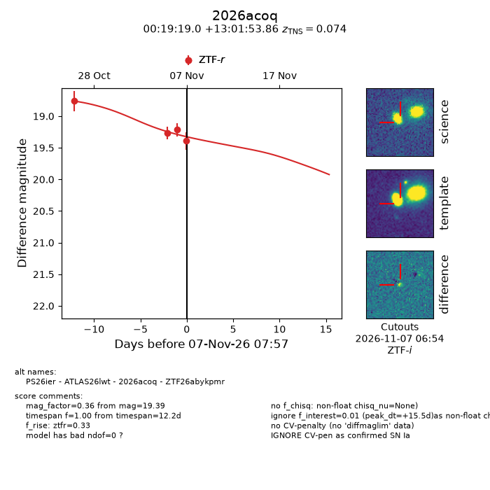
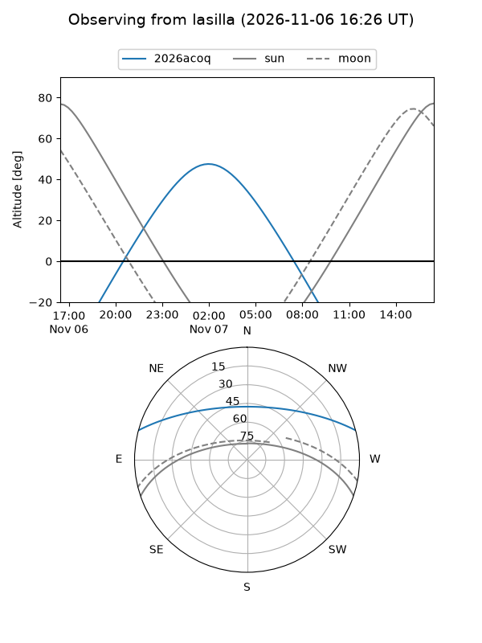
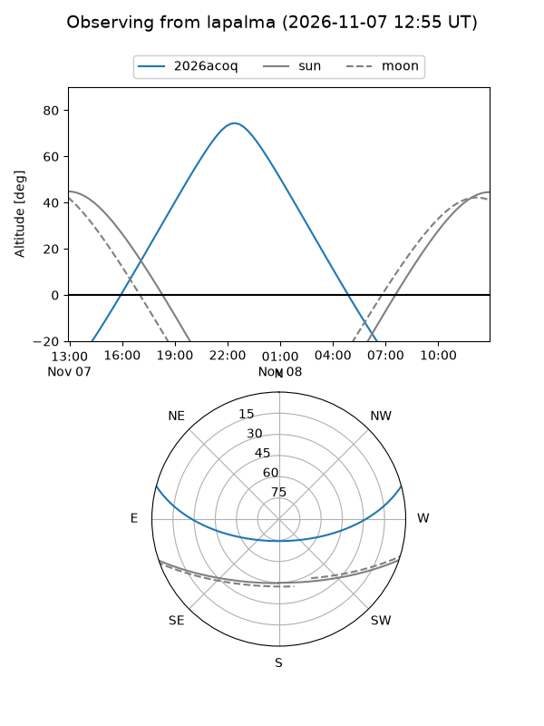
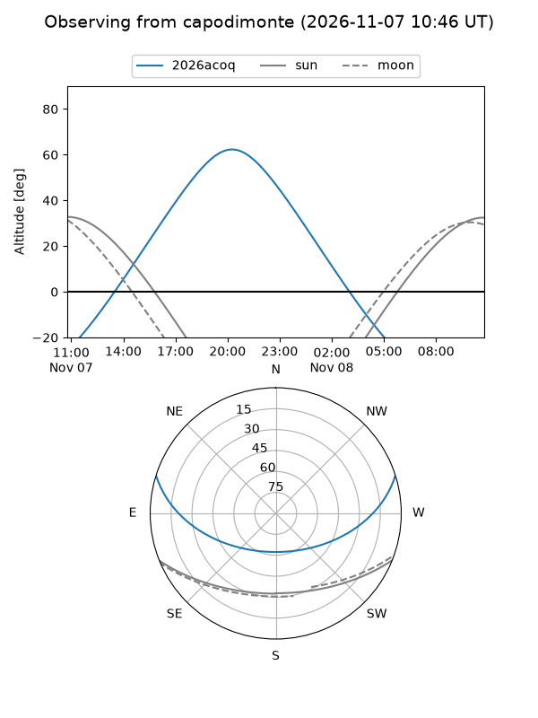
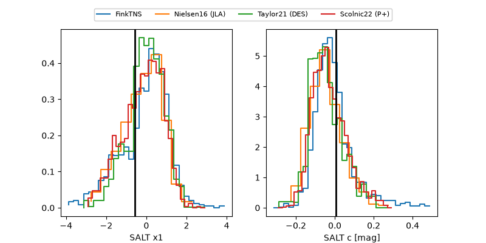

2026acoq
Target 2026acoq at 2026-11-07 07:59
Aliases and brokers:
FINK-ZTF: ztf.fink-portal.org/ZTF26abykpmr
Lasair-ZTF: lasair-ztf.lsst.ac.uk/objects/ZTF26abykpmr
ALeRCE-ZTF: alerce.online/object/ZTF26abykpmr
YSE-PZ: ziggy.ucolick.org/yse/transient_detail/2026acoq
TNS name: wis-tns.org/object/2026acoq
Direct TNS query: direct search
alt names
ZTF26abykpmr (ztf,fink_ztf)
2026acoq (tns,yse)
PS26ier (panstarrs)
ATLAS26lwt (atlas)
Coordinates:
equatorial (ra, dec) = 4.8291,+13.03163
equatorial (HMS+DMS) = 00:19:18.99,+13:01:53.86
galactic (l, b) = (110.9368,-49.09055)
Flags:
TNS type: SN Ia
TNS redshift: 0.0740
peak dt: +15.5
Photometry:
last ztfr=19.39
4 ztfr detections
Lightcurve

Visibility



Additional plots
